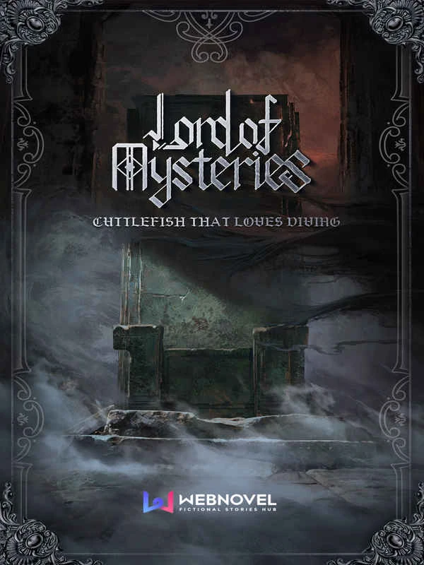

Step above the gray fog
In a world of steam engines, sealed artifacts, ancient gods, and pathways that promise power at the cost of sanity, one ordinary man wakes inside a dead stranger's life. What begins as survival becomes a journey through hidden history, secret identities, and the terrifying price of becoming more than human.
“The fool that doesn't belong to this era; the mysterious ruler above the gray fog; the King of Yellow and Black who wields good luck.”

Cover: The Mysteries Wiki (Fandom)Introduction
Firearms, cannons, battleships, airships, potions, divination, curses, and sealed artifacts: the age of steam is brighter than it looks. Behind every church, newspaper, noble house, and fog-shrouded ritual waits a secret capable of changing the world. Follow Klein Moretti from his first frightened questions to the throne of The Fool, then explore the eight volumes that turn a mystery into a legend.
Clown
A dead man's identity. A gray fog no one can explain. The first seat at a table of strangers.
Klein Moretti wakes in Tingen City and learns that survival means becoming a Beyonder. As a Nighthawk, he follows clues through rituals, nightmares, and church secrets while the first Tarot Club gathering takes shape above the gray fog.
Read the Volume 1 guide →Faceless
In Backlund, a detective's face is only another kind of mask.
Klein becomes Sherlock Moriarty and enters a city where every conspiracy has a respectable front. Between the True Creator, Lanevus, royal ambitions, and the secrets of the Faceless potion, he discovers that identity can be both armor and a weapon.
Read the Volume 2 guide →Traveler
The city is behind him. The ocean is full of monsters, pirates, and gods with borrowed names.
As Gehrman Sparrow, Klein sails through Bansy Harbor, Bayam, and the Sonia Sea. Every port offers a new bargain: cults, pirates, mermaids, the Sea God Kalvetua, and an adventurer's reputation that becomes harder to separate from the man beneath it.
Read the Volume 3 guide →Undying
A gentleman enters high society carrying a detective's past and an angel's attention.
Dwayne Dantès gives Klein access to noble drawing rooms, but wealth cannot hide the war beneath the city. While chasing the Antigonus Family's Notebook, he faces Zaratul, Azik's buried history, and the revenge waiting at the end of Ince Zangwill's trail.
Read the Volume 4 guide →Red Priest
The fog is political, the gods are moving, and every victory reveals a larger battlefield.
Klein investigates the Great Smog while Amon's avatars spread through Backlund. His path crosses King George III, Adam, the Evernight Goddess, and the buried truth of Sefirah Castle, transforming a private investigation into a struggle over the shape of history.
Read the Volume 5 guide →Lightseeker
To find a way forward, Klein must walk into a land where even history has been abandoned.
Amon's game leads Klein into ancient ruins, lost civilizations, and the truth behind the world he thought he had left. Along the way he hunts Kotar, deepens his bond with Sefirah Castle, and helps the City of Silver search for a future beyond eternal darkness.
Read the Volume 6 guide →The Hanged Man
A wandering magician grants wishes while quietly building a road toward godhood.
As Merlin Hermes, Klein tries to digest his potion through miracles that seem small compared with the coming catastrophe. Utopia, Roselle's final secret, Adam's trap, and Zaratul's last stand pull every thread of his journey tight.
Read the Volume 7 guide →Fool
To become The Fool, Klein must gamble with the thing he has spent the whole story protecting: himself.
The Celestial Worthy's will awakens as Klein accommodates the Fool Uniqueness and faces Amon inside Sefirah Castle. The final volume is a battle for power, sanity, and identity—and the quiet beginning of the legend that continues into Circle of Inevitability.
Read the Volume 8 guide →